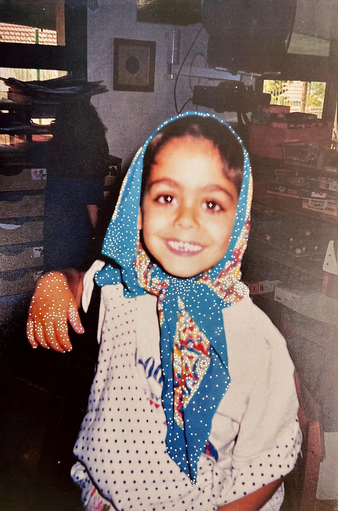

contact:
david.mottahedeh@gmail.com
Migrations
1954
My father Emanuel was born in Esfahan/Iran
1962
My mother Simin was born in Golpayegan/Iran
1983
They married in Esfahan and settled in Golpayegan where my sister was born later
1985
They moved to Tehran/Iran where my brother was born later
1989
My mother sister & brother escaped from Tehran/Iran → Istanbul/Turkey → Jerusalem/Israel
1989
My father escaped from Tehran/Iran → Karachi/Pakistan → Geneva/Switzerland → Jerusalem/Israel
1994
I was born in Jerusalem. Town of Modi'in/Israel is established
1997
We moved from Jerusalem to Modi'in
2012–Present
I moved to Tel-Aviv/Israel, I live and work there since
Education
2025
The Professional Training Program, Edmond de Rothschild Foundation, Tel Aviv
2022–2024
M.F.A. in Fine Arts, Bezalel Academy of Arts and Design, Tel Aviv/Jerusalem
2013–2017
M.Sc. Studies in Statistics, Tel Aviv University [no diploma]
2009–2013
B.Sc. in Mathematics and Statistics, Tel Aviv University
2007–2009
The Victor Bentata Program for Talented Youth in Mathematics, Bar Ilan University
Exhibitions
2025
Same River Twice, Edmond de Rothschild Center, Tel Aviv
2024
A Pomegranate’s Half, Bezalel MFA, Tel Aviv
2023
Out of the Box: Tangled (מחוץ לקופסא: סבוכים), Street Gallery, Jaffa
Community-Based Projects
2023
Jashne Deltangi: Golpayegan, Almacen Gallery, Jaffa
Research+Teaching Background
2022–Present
Lecturer, Statistics, Tel Aviv University's Students Union
2018–2022
Data Scientist, K Health, Tel Aviv
2017
Bayesian Methods in Clinical Research, School of Public Health, Tel Aviv University. Workshop
2016–2017
Research Assistant, Ono Academic College
2011–2017
Teaching Assistant, Mathematics and Statistics, Tel Aviv University
Publications
2025
A Pomegranate's Half (פלח רימון), Essay.
Safa Hadasha Journal, Issue No. 2:
Vacuum. Editor-in-Chief: Prof. Haviva Pedaya.
[
read]
Reviews
2025
Gilad Melzer on
Carpet Museum of Iran, Haaretz.
[
read]
Interviews
2025
Interview with Siamak Dehganpour on
Voice of America (Farsi). Discussed my work as an artist and projects including
Garmoshka,
Carpet Museum of Iran, and
Simin in SVO/SOV. The interview is in Persian.
[
watch]
2025
Interview with Vered Iftahi Green on
Kan B radio station. Covered similar topics about my artistic practice and works. The interview is in Hebrew.
[
listen]